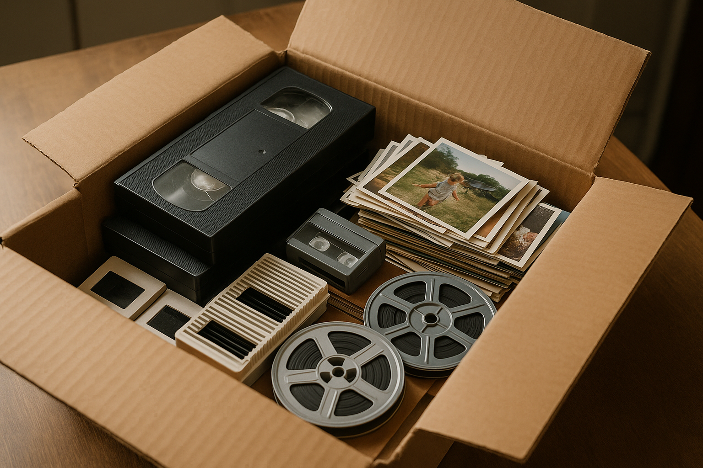

Tape to DVD
VHS, VHS-C, Hi8, Digital8, MiniDV, and similar tapes can be transferred to DVD.
Services
We transfer tapes, reels, slides, and photographs to DVD or thumb drive. We also scan photos and make slideshows.

Typical Drop-Off
You do not need to sort every item before you visit us. A lot of orders include tapes, reels, slides, and photos in the same box.
That is normal, and it is one reason the best first step is to bring the media in person.
Main Services
VHS, VHS-C, Hi8, Digital8, MiniDV, and similar tapes can be transferred to DVD.
We can also put the video files on a thumb drive.
8mm and Super 8 reels can be transferred with cleanup work when possible.
Photo Services
We scan 35mm slide collections into digital files.
Printed photographs can be scanned into digital files.
Scanned slides and photos can be turned into a slideshow on DVD or thumb drive.
Accepted Formats
If the labels are faded or missing, bring the media anyway. We can usually identify it before quoting the job.